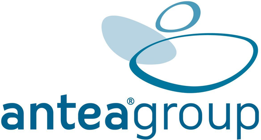
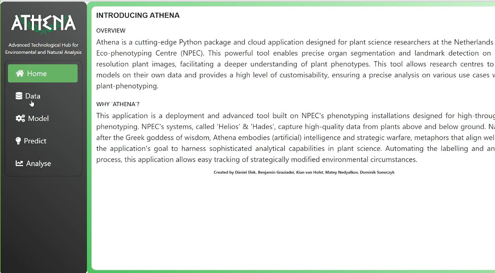
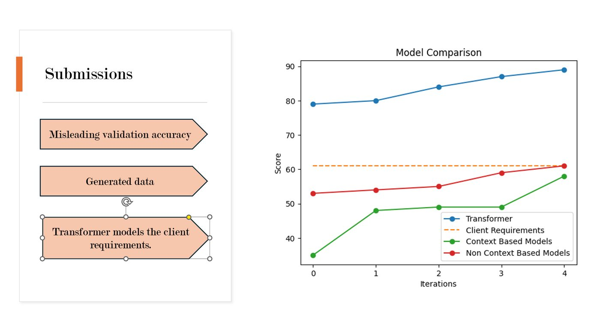
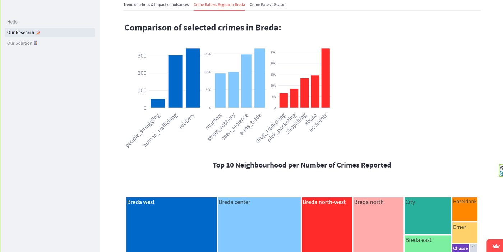
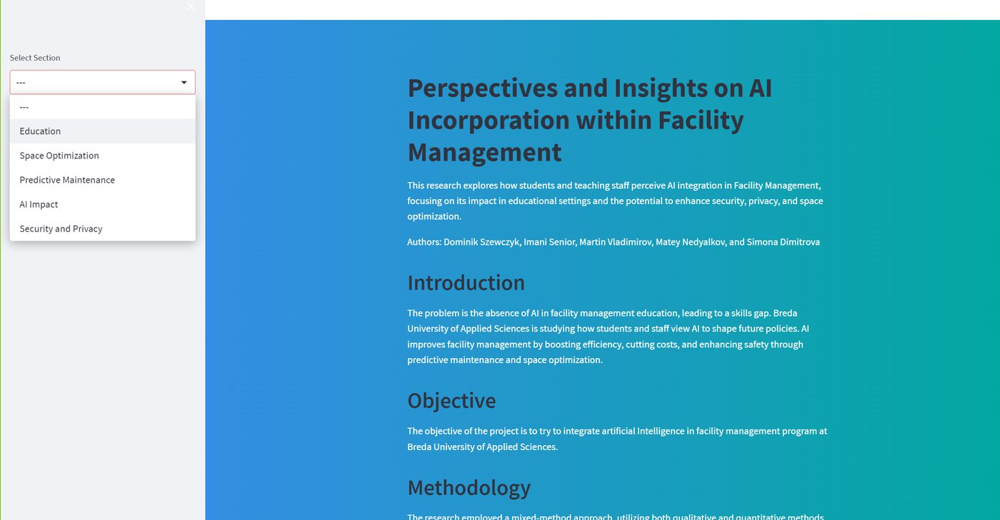

Machine Learning for Plasma Reactor Optimisation
A physics-informed model and Streamlit dashboard that predicts a plasma reactor's ozone output, and works backwards from a target output to the settings that reach it.
View project →Intelligent Pickup Prediction System
A multi-model machine learning system, with a Streamlit dashboard, that forecasts unexpected pickups for a logistics company and cuts distance, cost, and emissions.
View project →
AI-Powered 3D Digital Twin and Object Removal
Research into automating 3D urban reconstruction with semantic segmentation, generative object removal, and Neural Radiance Fields.
View project →
ATHENA: MLOps for Plant Science
Turning research machine learning models into a production-ready, cloud-deployed application for plant phenotyping at NPEC.
View project →
Emotion Classification with NLP
An NLP pipeline using transformer models to detect emotions in video transcripts for media content analysis.
View project →
Neighbourhood Safety and Crime Prediction
A Streamlit dashboard with research and a predictive model that forecasts monthly crime across Breda's neighbourhoods to support local safety.
View project →
Plant Analysis with Computer Vision and Robotics
Root segmentation from plant images plus a simulated precision liquid-handling robot tuned with reinforcement learning.
View project →
AI in Facility Management Studies
A mixed-method study and interactive dashboard on attitudes to AI in facility management, presented at the AI at BUas conference.
View project →
Renewable Energy Across Europe (SDG 7)
A Power BI analysis of renewable energy consumption across Europe, identifying which countries beat the global average and how.
View project →AI-Powered Spider Detector
A convolutional neural network that identifies spiders and assesses threat level, with Grad-CAM explainability and a UX prototype.
View project →Audience and Content Performance Analysis
A data-driven analysis of content and ratings for Banijay, exploring audience preferences and the link between viewership and social media.
View project →